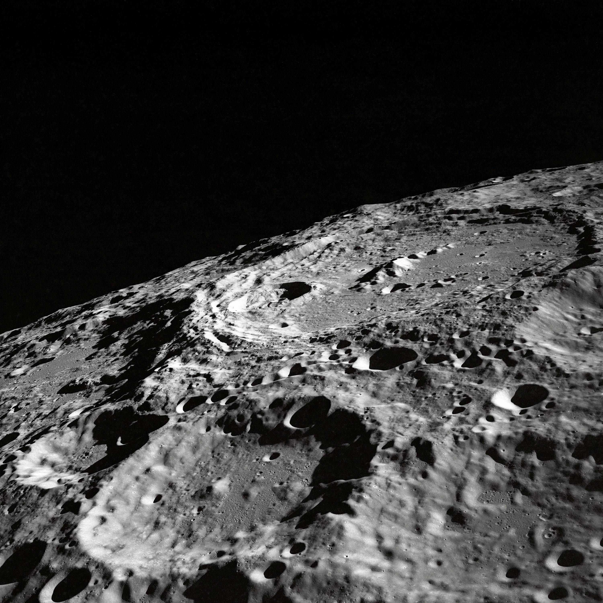
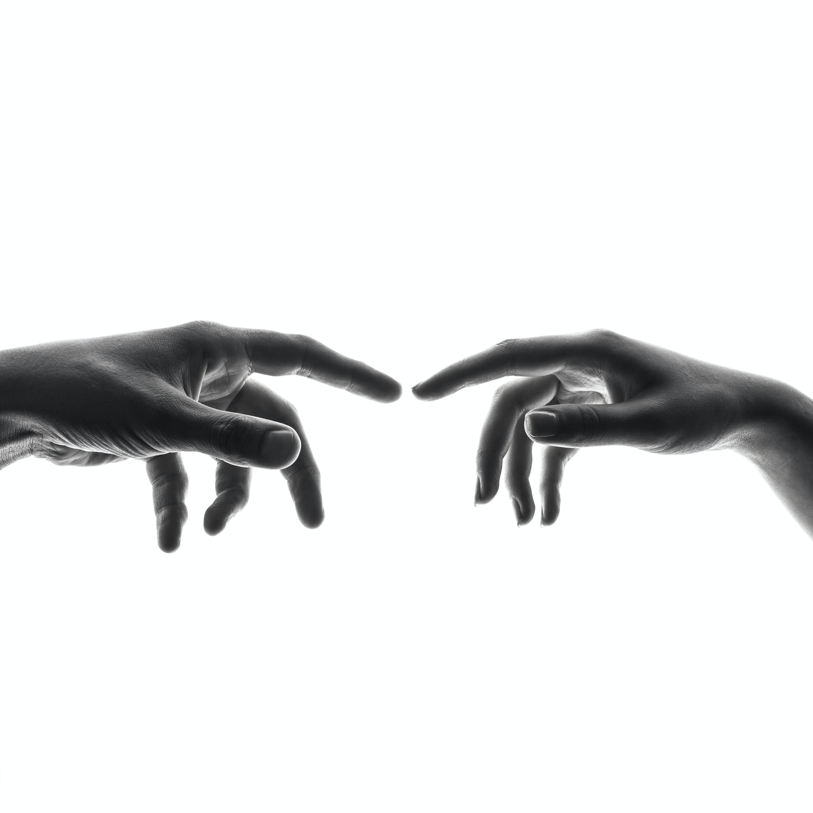
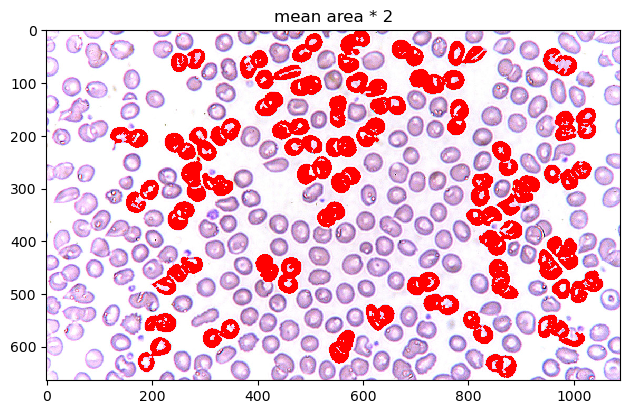

Notes and reflections in understanding image processing fundamentals.
HOME Image
Notes and reflections in understanding image processing fundamentals from Prof. Gino Borja's class.
Click any blog post below or navigate using the sidebar.

1-2. üñºÔ∏è Intro to the Digital Image

3-4. üåü Extensively Cleaning up the Moon

5-6. ❓ Who's That Pokemon?
7-8. üî¨ Cells at Work
9-10. üå± Isolating Greenery

11-12. üëã Watch the Hands

13-14. üçÉ Leaf Me Alone

15-16. üé∂ Focus on the Rhythm
17-18: üí£ Colorblind Bomb Defusal
SESSION 1-2 üñºÔ∏è Introduction to the Digital Image
An image is a visual reprsentation of a subject. Images can come in many mediums, types, and formats. A large divider in image types is analog vs. digital. There are many differences between these two, particularly:
| Image Type | Resolution | Storage | Longevity |
|---|---|---|---|
| Analog Images | Molecular Resolution | Chemical Film Storage | Oxidized Degredation |
| Digital Images | Pixel Resolution | Digital Storage | Digital Preservation |
While analog images have merit, for example, for large-scale printing where we want to avoid pixelized artifacts, majority of processing techniques are for the digital image. For this course, we will go through these techniques.
üíØ MAIN TAKEAWAYS
- Image Processing requires the digitalization of images, which limits the color space of an image to a finite spectrum of cells.
- While analog images have near-infinite resolution, these are chemically produced and fade overtime over the digital image.
- There are different kinds of color types spaces with a different numbers of channels which may vary in usefulness depending on your use case.
The Digital Image
The digital image is represented by grids of cells or pixels, assigned with corresponding values applied to the whole area of the cell.
To digitalize an image, we consider the following:
- Sampling or Spatial Resolution: How many pixels will be used to represent the image?
- Quantization or Intensity Resolution: How many colors/bands of intensity should represent the image? (think 8-bit, 16-bit resolutions, where a bit is a color in a limited color palette)
Images also have different color types:
- Binary: 0 or 1, only 2 color states
- Grayscale: 0 to 255, spectrum of color states meant for one band
- Display colormap image: where each state represents a colormap, usually with more than one band value (like RGB)
And different color spaces:
- RGB: Red, Green, and Blue channels. Additive light stacked on each other usually for computer screens. This also sometimes includes A, Alpha, which determines the transparency of the pixel.
- HSV: Hue, Saturation, and Value channels. A different way of expressing color, where:
- Hue (°) is a specific angle, or the pure underlying base color/
- Saturation (%) is the purity of the color, its distance from being mixed equally with other colors (i.e., turning whiter)
- Value (%) is the strength of the color itself, how light or dark the color is.
- CMYK: Cyan, Magenta, Yellow, and Key channels. Subtractive pigments mixed together usually for printing and painting.
RGB vs CMYK in Action
Even with existing familiarity on the difference between additive light of RGB and subtractive pigments of CMYK, the differences between the two continue to elude me. My hobby, digital art, involves drawing using a digital software using an RGB display. Some software offer "color profiles" -- the ability to see what the RGB colors on your digital canvas will look like if printed in the particular CMYK color profile. Even with a preview, the results almost always never turn out as expected (to be expected, since the CMYK preview is still previewed on an RGB display).
Displayed below are examples of common CMYK color profiles, the bane of my creative process:

If you'll notice, most profiles dislike blue! This is very sad. Many a times have the vibrant, neon blues in my artwork gotten washed out in print. It's just the nature of additive vs subtractive colors. Blue is Magenta + Cyan, which can only get so bright using the limitations of a laser printer. (Thank god my favorite color is orange!)
Shown below is a very warm-colored illustration I made using Clip Studio Paint, using RGB values (left). I printed this out later on in CMYK (right). As you'll notice, the image's readability is somewhat lost because the colors look very different. Bright reds turn brown and blues turn gray. In particular, the main subject's skin looks less vibrant. Things to keep in mind. Color space translations are not always seamless.

SESSION 3-4 üåü Extensively Cleaning up the Moon
This section focuses on Enhancement Extraction Recognition Image Processing Techniques.
üíØ MAIN TAKEAWAYS
- Before doing other upstream tasks, images should be enhanced or cleaned to maximize its helpfulness later in a pipeline.
- Image enhancement techniques are algorithmic and often manually tweaked, through trial and error until subjectively satisfactory to the user's use case, such as in white balancing and histogram manipulation.
- Fourier Transform eliminates periodic patterns in images, which may be periodic at several angles and therefore must be accounted for in all these angles when masking these signals in a frequency space.
Image enhancement is useful for cleaning or augmenting images for personal use or professional use as an input for further analysis in a larger pipeline. Of the many techniques available, the following will be discussed:
- Fourier Transform: Turning an image domain into a frequency domain to remove repeating artifacts.
- White Balancing: Removing a color overcast to make white portions of an image its natural white, applied to the whole image.
- Histogram Manipulation: Improving a dark/low contrast/light image to a higher contrast by stretching its values to create a uniformly represented histogram.
While white balancing and histogram manipulation have immense use, we will be focusing primarily on the Fourier Transform, and how it can be used to manually clean an image.
The Fourier Transform
Images, like audio, are signals that can be broken into wave pattern superpositions. As such, periodic patterns like stripes and checkered texture artifacts can be removed by simply converting the image to frequencies, dulling the strongest frequencies, then converting it back to its original image format.
This is an example of an image of diagonal stripes represented in a frequency domain:

What are the 3 dots? The 2 outer dots represent the repeating pattern of the stripes at the angle of the diagonal. The middle dot is the DC component corresponding to the total luminosity of the image. In a frequency plot, a dot can mark the dominating wavelength that prevails over other smaller wavelengths. In this case, this would be the periodic pattern of the diagonal. The plot will follow the direction/s of the pattern.
Cleaning up the Moon
How about an image of a moon? Below is an example of an old moon image with scanline artifacts. We can see that the frequency plot here is noisier, because there's much more going on in this image than a striped pattern. But even still, a prevailing cross shape stands out.
import numpy as np
import matplotlib.pyplot as plt
from skimage.io import imread, imshow
from skimage.color import rgb2gray
orbiter = rgb2gray(imread('lunar_orbiter.jpg'))
orbiter_fft = np.fft.fftshift(np.fft.fft2(orbiter))
fig, ax = plt.subplots(1, 3, gridspec_kw=dict(width_ratios=[16,16,1]),figsize=(16,8))
img = ax[0].imshow(orbiter, cmap='gray')
ax[1].imshow(np.log(abs(orbiter_fft)), cmap='gray')
fig.colorbar(img, cax=ax[2]);

Given what we know in the diagonal stripe example, what part of the cross represents the horizontal scan lines?
The vertical part of the cross. Going along the y-axis of this image is where the oscillating pattern emerges. In order to remove this, we set the values along this line to a low number like 1 -- we skip the center, because that's the DC component. Removing it would leave only the textures of the image (which is useful sometimes!) but for us, we just want a normal picture of the moon crater.
orbiter_fft2 = orbiter_fft.copy()
# mask vertical component (scan lines)
orbiter_fft2[:280,orbiter_fft.shape[1]//2] = 1 # skip center because you dont want to remove the dc component
orbiter_fft2[-280:,orbiter_fft.shape[1]//2] = 1
imshow(np.log(abs(orbiter_fft2)), cmap='gray');
imshow(abs(np.fft.ifft2(orbiter_fft2)), cmap='gray');
The image is now clean! But we're not done yet...
Guests are Coming
We have another image of an astronaut visiting us. This time, a checkered pattern is muddling our image. Here is what the frequency plot looks like:
orbiter = imread('moon_image.png')
orbiter_fft = np.fft.fftshift(np.fft.fft2(orbiter))
fig, ax = plt.subplots(1, 3, gridspec_kw=dict(width_ratios=[16,16,1]),figsize=(16,8))
img = ax[0].imshow(orbiter, cmap='gray')
ax[1].imshow(np.log(abs(orbiter_fft)), cmap='gray')
fig.colorbar(img, cax=ax[2]);
What's the difference between a striped pattern and a checkered pattern in a frequency plot?
The pattern works in multiple angles! A periodic pattern can be seen whether vertical, horizontal, or diagonally in both slanting directions, therefore, our conundrum as multiplied into a grid-like imprint on the frequency plot. Let's get rid of it:
orbiter_fft2 = orbiter_fft.copy()
# mask out the checkered pattern
orbiter_fft2[orbiter_fft.shape[0]//4+1, :] = 1
orbiter_fft2[orbiter_fft.shape[0]-orbiter_fft.shape[0]//4, :] = 1
orbiter_fft2[:, orbiter_fft.shape[1]//4+1] = 1
orbiter_fft2[:, orbiter_fft.shape[1]-orbiter_fft.shape[1]//4] = 1
orbiter_fft2[178, :] = 1
orbiter_fft2[orbiter_fft.shape[0]-178, :] = 1
orbiter_fft2[:, 236] = 1
orbiter_fft2[:, orbiter_fft.shape[1]-236] = 1
imshow(np.log(abs(orbiter_fft2)), cmap='gray');
imshow(abs(np.fft.ifft2(orbiter_fft2)), cmap='gray');

Hooray! üåí
SESSION 5-6 ❓ Who's That Pokemon?
This section focuses on Image Cleaning/Processing techniques that prepare images for tasks like Image Extraction and Recognition.
üíØ MAIN TAKEAWAYS
- Image cleaning techniques also involve some trial and error until subjectively satisfactory to the user's purpose.
- Morphological operations require an understanding of how each operation edits each pixel, to maximize its usefuless. Erosion, dilation, closing, opening, and more are tools that become useless if you do not understand the logic behind how it decides if a pixel is 1 or 0 based on its surroundings and structuring element.
- Spatial filters, even if they are the same type, vary in effect depending on its kernel size. These filters also change depending on other things, like padding and stride, especially when applied to CNNs.
In an image processing pipeline, certain images may come in with dust particles, poor scanning quality, and portions we are not interested in. There are a few ways we can sharpen our images ahead of time to focus on the shapes that matter, for later extraction and recognition. This is akin to cleaning the data in a tabular form before feeding it into a machine learning model for training. The better the quality the data, in this case, the more defined the shapes, the better the algorithm or model will be at correctly labelling what it is tasked to classify.
The following are a couple of ways to pre-process an image for a bigger pipeline:
- Spatial Filters
- Morphological Operations
- Erosion: The value of a pixel is 1 only if all of the 1 pixels of the structuring element are also 1 based on the surrounding pixels of the observed pixel in the image, else 0. (functions like an AND)
- Dilation: The value of a pixel is 1 if at least one of the 1 pixels of the structuring element is also 1 based on the surrounding pixels of the observed pixel in the image, else 0. (functions like an OR)
- Closing: applying Dilaiton then Erosion using the same structuring element.
- Opening: applying Erosion then Dilation using the same structuring element.
- Thin: Reducing the image's pixels into lines with thickness of 1px.
Spatials filters are small grids of pixels or matrices applied to an image through convolution. These filters are known as kernels. The value of the pixels shall be defined based on it and its neighbors, determined by the kernel's values. Kernels can be any shape and size, but adjusting a kernel will adjust how it scans the image.
In essence, areas will give high convolution when the part of the image that the kernel scans is very similar to the pattern implied by the kernel. A kernel that emphasizes horizontal values will return the portions of the image that are horizontally inclined. The same goes for vertical, diagonal, and edge filters.
Very simple kernels can be found here on this Wikipedia page on the topic, and an interactive version that allows you to test different 3x3 kernels can be found here, by Victor Powell of setosa.io.
Morphological Operations assist in reducing or expanding images to the elements we want to observe. These operations follow a structuring element, which usually defines the shape and size of the parts of the image we want removed (like removing lines of a pad paper) or retained (like closing the gaps of a person's handwriting), depending on the use case.
Morphological Operations are best performed in a binary colorspace (0 or 1 values), where what is retained is the shape or silhouette of the desired feature.
It does this through a few operations, such as:
Morphological Handwriting
A common use case of image processing is for OCR. One hindrance of OCR is the context of the paper in which the document to be scanned is written. The paper can be dirty, lined, dotted, etc. What we want for our analysis is just the handwriting.
We can remove the rest through image processing techniques like the previously discussed fourier transform and our newly learned morphological operations.
import os
os.environ['SKIMAGE_DATADIR'] = '/tmp/.skimage_cache'
import numpy as np
import matplotlib.pyplot as plt
from skimage.io import imread, imshow
from skimage.color import rgb2gray
from skimage.morphology import erosion, dilation, opening, closing, thin
from skimage.color import rgba2rgb, rgb2gray
from scipy.ndimage import rotate
# Read the image
receipt = rgb2gray(rgba2rgb(imread('receipt2.PNG')))
# Rotate the image slightly
receipt_clean = rotate(receipt, -1, reshape=False)
# Plot rotated image
fig, ax = plt.subplots(1, 4, figsize=(12, 6))
imshow(receipt_clean, cmap='gray', ax=ax[0])
# Use fourier transform to convert into frequency domain
receipt_fft = np.fft.fftshift(np.fft.fft2(receipt_clean))
receipt_fft_2 = receipt_fft.copy()
# Diminish vertical periodic component from frequency domain
receipt_fft_2[:65, 110:113] = 1
receipt_fft_2[-65:, 110:113] = 1
# Plot frequency domain
imshow(np.log(abs(receipt_fft_2)), cmap='gray', ax=ax[1])
# Plot fourier transformed image
receipt_clean = abs(np.fft.ifft2(receipt_fft_2))
imshow(receipt_clean, cmap='gray', ax=ax[2])
# Binarize the image with threshold value of 0.43
receipt_clean[receipt_clean > 0.43] = 1
receipt_clean[receipt_clean <= 0.43] = 0
receipt_clean = abs(receipt_clean - 1) # Invert 1 and 0
# Plot the binarized image
imshow(receipt_clean, ax=ax[3])
plt.show()

In the code above, we perform the following steps to a photo of handwriting on lined notepad paper:
- Rotation: The image is slightly tilted. We want to remove the lined pattern, so we need it to be as horizontal as possible.
- Fourier Transform: The rotation-adjusted image can now be fixed by removing the vertical wavelength in the frequency domain.
- Binarization: After removing the horizontal lines, the image can be converted into a binary colorspace for morphological operations.
Morphological operations can now be performed. In this case, the following structuring elements were used:
selem_r1 = np.array([[0, 0],
[1, 1],
[1, 1],
[0, 0]])
selem_r2 = np.array([[0, 1, 0],
[1, 1, 1],
[0, 1, 0]])
fig, ax = plt.subplots(1, 2)
ax[0].imshow(selem_r1, cmap='gray')
ax[0].set_title('Structuring Element 1')
ax[1].imshow(selem_r2, cmap='gray')
ax[1].set_title('Structuring Element 2');

The following operations were then performed, in sequence:
- Erosion with Structuring Element 1: to remove the horizontal lines.
- Dilation with Default Structuring Element: To connect the remaining handwritten
- Erosion with Structuring Element 2: To reduce the handwriting thickness
fig, ax = plt.subplots(1, 2, dpi=200)
imshow(receipt_clean, ax=ax[0])
imshow(erosion(dilation(erosion(receipt_clean, selem_r1)), selem_r2),
cmap="gray", ax=ax[1]);

Optionally, you can perform Thin at the end to make the handwriting have a pixel width of 1px at the expense of losing a lot of information in the shape.
Morphological Pokemon
Another application of morphological operations is getting the outline of a silhouette. We can do this by:
- Reading an image's binarized silhouette
- Copying the image
- Eroding the copy
- Subtracting the original image to the eroded copy
What will remain is the outline that was not eroded. For a visual of what this looks like, let's use the starter Pokemon of my favorite Pokemon region, Sinnoh. These all have very recognizable silhouettes, so extracting an outline should not be hard.
pokeballs = ['chimchar', 'piplup', 'turtwig']
ultraballs = {}
fig, ax = plt.subplots(4, 3, figsize=(12, 12))
for column, pokeball in enumerate(pokeballs):
pokemon = imread(f'{pokeball}.png')
pokemon_outer = pokemon[:, :, 3]
ax[0, column].imshow(pokemon)
ax[0, column].set_title(pokeball)
ax[1, column].imshow(pokemon_outer, cmap='gray')
ax[1, column].set_title(f'{pokeball} outer')
selem_p1 = np.ones((10, 10))
pokemon_inner = erosion(pokemon_outer, selem_p1)
ax[2, column].imshow(pokemon_inner, cmap='gray')
ax[2, column].set_title(f'{pokeball} inner')
pokemon_outline = erosion(pokemon_outer - pokemon_inner)
ax[3, column].imshow(pokemon_outline, cmap='gray')
ax[3, column].set_title(f'{pokeball} outline')
ultraballs[pokeball] = pokemon_outline
fig.tight_layout()
plt.show()

Filtered Pokemon
We can also perform Spatial Filtering. The advantage of spacial filtering is that it can approximate shapes in an image of a wider colorspace (ex., grayscale), over the limitations of a binary colorspace in morphological operations.
A normal image would suffice, but let's use my favorite starter Pokemon from Sinnoh to give a basic visual example of how convolution using filters works.
We will use the following filters:
- Horizontal Sobel Filter: A filter that looks for defined horizontal lines/outlines in an image
- Vertical Sobel Filter: A filter that looks for defined vertical lines/outlines in an image
- Box Blur Filter: A filter that normalizes the values of a pixel based on the values around it
- Gaussian Blur Filter: A filter that "normal"-izes the values of a pixel based on the values around it, using a gaussian distribution's values as a filter.
import matplotlib.pyplot as plt
from scipy.signal import convolve2d
# Horizontal Sobel Filter
kernel_h = np.array([[1, 2, 1],
[0, 0, 0],
[-1, -2, -1]])
# Vertical Sobel Filter
kernel_v = np.array([[1, 0, -1],
[2, 0, -2],
[1, 0, -1]])
# Box Blur
kernel_bb = (1 / 9.0) * np.array([[1., 1., 1.],
[1., 1., 1.],
[1., 1., 1.]])
# Gaussian Blur
kernel_gb = (1 / 16.0) * np.array([[1., 2., 1.],
[2., 4., 2.],
[1., 2., 1.]])
kernel_names = ['Horizontal Sobel', 'Vertical Sobel', 'Box Blur', 'Gaussian Blur']
kernels = [kernel_h, kernel_v, kernel_bb, kernel_gb]
Now let's apply these filters to the Pokemon, Piplup! üêß
piplup = imread(f'piplup.png')
piplup_silhouette = piplup[:, :, 3]
for kernel_name, kernel in zip(kernel_names, kernels):
conv_im1 = convolve2d(piplup_silhouette, kernel, 'valid')
fig, ax = plt.subplots(1,3, gridspec_kw=dict(width_ratios=(8,20,20), wspace=0.5), figsize=(12, 4))
kern = ax[0].imshow(kernel, cmap='gray')
ax[0].set_title(kernel_name)
ax[1].imshow(piplup_silhouette, cmap='gray')
ax[1].set_title('Original')
ax[2].imshow(abs(conv_im1), cmap='gray')
ax[2].set_xticks([])
ax[2].set_yticks([])
ax[2].set_title('Filtered')


Selective Features. For the sobel filters, the change is obvious. the horizontal/vertical portions of Piplup are more defined depending on the filter, while everything else without the same pattern fizzes out of visibility. The round shape of Piplup's head is retained, but in the horizontal filter, the top and bottom is more defined, and in the vertical filter, the left and right are more defined.
Size of Kernels. Blur filters are also very slight, but noticeable. These are only size 3x3 kernels, so expanding them into larger matrices like 5x5 or 10x10 would compound their blurring effect by normalizing the values of larger areas of pixels.
SESSION 7-8 üî¨ Cells at Work
This section focuses on Enhancement Extraction Recognition Image Processing Techniques.
üíØ MAIN TAKEAWAYS
- Morphological operations will not perfectly isolate all its targets in an image unless irregular use cases are isolated and handled, which limits the color space of an image to a finite spectrum of cells.
- While blob detetction takes longer and is generally less suited for non-round object identification, it may be more useful in cases where objects are circular or ring-like in nature.
- Enhancing an image before extracting features from it may save a lot of time, for example, by balancing the lighting in the edges of a blood cell slide image so these side cells are not fragmented during connected component extraction.
Of the extraction methods available, there are two classical methods of detecting objects in our image:
- Blob Detection
- Connected Components
Blob detection is done using algorithms by detecting bright objects on dark backgrounds, and vice versa (for some algorithms only). Three of the many methods available are as follows:
| Method | Light Blob + Dark BG | Dark Blob + Light BG | Speed | Accuracy | What it Uses | Uniqueness |
|---|---|---|---|---|---|---|
| Laplacian of Gaussian (LoG) | Yes | No | Slower | More Accurate | Laplacian Matrix | Good for area/location approximation |
| Difference of Gaussian (DoG) | Yes | No | Faster | Less Accurate | 2 Gaussian Smoothed Images | Ring-like objects more identifiable |
| Determinant of Hessian (DoH) | Yes | Yes | Faster | Less Accurate | Hessian Matrix | Small images with less curvature unidentifiable |
Using Morphological Operations discussed previously, an image can be cleaned then binarized to detect blobs, defined as a connected group of pixels. Connected Components then count and label these groups of pixels as its own blob regardless of size and shape.
Of the two, the more reliable and versatile method is Connected Components, which allows for detecting non-spherical shapes and also identifying properties of each object beyond just area and location.
Counting Cells
An example use case of connected components is for counting objects like cells in healthcare. This is done manually, but can be somewhat approximated with some image processing.
We will be using as an example an image of red blood cells.
import numpy as np
import pandas as pd
import matplotlib.pyplot as plt
%matplotlib inline
from skimage.measure import label, regionprops, regionprops_table
from skimage.color import label2rgb
fig, ax = plt.subplots(1, 2, figsize=(12,4))
rbc = rgb2gray(imread('rbc.jpeg'))
imshow(rbc, ax=ax[0]) # Grayscale image
rbc_bw = (rbc < 0.8)*1
rbc_mask = rbc < 0.8
imshow(rbc_bw, cmap='gray', ax=ax[1]); # Binary image
First we read the image in grayscale, then binarize it. In this case, I used a threshold of 0.8 to determine the cutoff between 0 and 1.
Now let's use morphological operations to separate some cells. In this case, I eroded twice and dilated twice to separate the cells then return them to their original size.
from skimage.morphology import erosion, dilation, opening, closing
def multi_dil(im,num):
for i in range(num):
im = dilation(im)
return im
def multi_ero(im,num):
for i in range(num):
im = erosion(im)
return im
fig, ax = plt.subplots(1, 2, figsize=(12,4))
rbc_cleaned = multi_dil(multi_ero(rbc_bw, 2), 2) # Erode twice, dilate twice
imshow(rbc_cleaned, cmap='gray', ax=ax[0]) # Image after morphological operations
label_rbc = label(rbc_cleaned)
imshow(label_rbc, ax=ax[1]); # Image labelled with Connected Components
rbc_props = pd.DataFrame(regionprops_table(label_rbc, properties=['area', 'convex_area']))
print(f'Number of cells: {len(rbc_props) - 1}')
According to our labelling, we have 375 cells. Obviously the image doesn't look like it has 375. There must have been a lot of things it overcounted as a blob.
Let's breeze through all our labels to see what it detected as an "object"
import matplotlib.animation as animation
%matplotlib notebook
fig, ax = plt.subplots()
ims = []
print('processing animation...')
for num in range(len(rbc_props)):
im = ax.imshow((label_rbc==num)*1_000_000 + label_rbc, animated=True, cmap='gray')
ims.append([im])
ani = animation.ArtistAnimation(fig, ims, interval=50, blit=True,
repeat_delay=1000)
print('animation ready')
plt.show()
# ani.save("rbc.gif", dpi=100, writer=animation.PillowWriter(fps=12))
# print('animation saved')
A lot of tiny particles and a lot of clumps! Using an interactive slider I tried my best to manually see problem areas in our objects. Here are a few.
# from ipywidgets import interactive, IntSlider
# %matplotlib inline
# cells = IntSlider(min=0, max=len(rbc_props)-1, step=1)
# def g(cell):
# imshow((label_rbc==cell)*1_000_000 + label_rbc, cmap='gray')
# plt.show()
# interactive_plot = interactive(g, cell=cells)
# interactive_plot
problem_dust = [1, 36, 37, 51, 70, 74, 99, 102, 117, 139, 145, 147, 159, 160,
161, 163, 165, 180, 181, 182, 207, 208, 209, 212, 215, 217,
226, 231, 237, 238, 240, 253, 254, 258, 271, 276, 282, 284,
296, 299, 303, 306, 309, 312, 314, 316, 317, 318, 326, 332,
336, 338, 341, 349, 351, 354, 357, 358, 359, 371, 363, 365,
367, 368, 373]
problem_clump = [5, 7, 10, 19, 22, 28, 32, 38, 40, 41, 45, 50, 54, 57, 61, 62,
66, 80, 81, 97, 85, 90, 94, 103, 104, 105, 106, 107, 110,
111, 113, 114, 119, 120, 121, 123, 126, 137, 138, 141, 151,
153, 155, 158, 162, 167, 183, 184, 188, 201, 204, 205, 220,
244, 246, 248, 252, 259, 263, 278, 280, 293, 297, 305, 308,
330, 342, 345, 348, 356]
fig, ax = plt.subplots(1, 2, figsize=(12, 6))
ax[0].imshow(np.isin(label_rbc, list(problem_clump)), cmap='gray')
ax[0].set_title('clump issues')
ax[1].imshow(np.isin(label_rbc, list(problem_dust)), cmap='gray')
ax[1].set_title('particle issues');
There are definitely less than 375 cells, but at the same time there is often more than one cell clumped in each object. Even with more refined morphological operations, some of these clumps are overlapping too much that they cannot be separated, unless isolated and dealt with on a case-by-case basis.
Defining Cells
Now that we have an approximation of cells, let's see what else we can learn from them. Using regionprops, let's create a table of area and convex area per label.
rbc_props = pd.DataFrame(regionprops_table(label_rbc, properties=['area', 'convex_area']))
print(f'Number of cells: {len(rbc_props)}')
Now let's see what the histogram looks like for these cell features.
rbc_props[(rbc_props['area'] >= np.quantile(rbc_props['area'], 0.1)) &
(rbc_props['area'] <= np.quantile(rbc_props['area'], 0.9))].plot.hist(alpha=0.5);

The cells have a mean area of 748.55, and a mean convex area of 961.41 The fact that the convex area's average value is a bit higher than the area (as shown in the histogram) could indicate that most cells are concave rather than closed and circular. This could be from its ring-like shape with lighter values in the middle that may break to create a curved line than a circle, or the issue of clumped, connected cells that could not be separated during pre-processing.
Now that we have the mean area of cells, let's try segmenting these cells further by getting irregular cells with an area 1.1, 1.5, and 2 times greater than the mean.
fig, ax = plt.subplots(1,3,figsize=(12,6))
rbc_props.index = np.arange(1, len(rbc_props) + 1)
ax[0].imshow(np.isin(label_rbc, (rbc_props[rbc_props['area'] > rbc_props['area'].mean()*1.1].index)), cmap='gray')
ax[1].imshow(np.isin(label_rbc, (rbc_props[rbc_props['area'] > rbc_props['area'].mean()*1.5].index)), cmap='gray')
ax[2].imshow(np.isin(label_rbc, (rbc_props[rbc_props['area'] > rbc_props['area'].mean()*2].index)), cmap='gray')
ax[0].set_title('mean area * 1.1')
ax[1].set_title('mean area * 1.5')
ax[2].set_title('mean area * 2')
plt.show()

A lot of cells look normal in 1.1 and 1.5. Let's limit it as much as possible. In this case, let's try visualizing mean area * 2 over the original image for maximum contrast.
rbc_color = imread('rbc.jpeg')
highlight_layer = np.isin(label_rbc, (rbc_props[rbc_props['area'] > rbc_props['area'].mean()*2].index)).astype(int)
rbc_highlight = rbc_color.copy()
rbc_highlight[highlight_layer == 1] = np.asarray([255, 0, 0])
imshow(rbc_highlight)
plt.title('mean area * 2');

When overlayed on top of the image, we can see how the pre-processing before counted objects as particles. The cells at the edges of the image are slightly more overexposed than the ones in the middle, making the translation to binary more brittle and disconnected, leading to tinier areas. This left most of the bigger cells to be the cells in the center.
Unfortunately, most of these cells are slightly clumped cells (most likely undergoing mitosis). We weren't able to find "irregular" cells in the context of detecting diseases like sickle cell anemia, but for the purpose of the exercise, these do appear to be cells with a mean area greater than the cells in the image.
SESSION 9-10 üå± Isolating Greenery
This section focuses on Enhancement Extraction Recognition Image Processing Techniques.
üíØ MAIN TAKEAWAYS
- Thresholding does not need to be done through trial and error. By using Otsu's method, we can binarize an image as best we can through inter-class variance based on intensity values and their fraction of pixels in an image.
- Segmentation in colored spaces are a bit trickier.RGB and HSV thresholding require a good understanding of each channel to be able to isolate the objects you desire, like what colors to mix in RGB, and what combination of hues and values to select in HSV.
- KMeans is an alternative but unreliable image segmenter. KMeans is another approach to segment, but as an unsupervised learning method, its results are not consistent, and are not always guaranteed to isolate the objects you want.
In many cases, our object of interest is not the image itself, but chunks that make up the image, independently identified and assessed. Image segmentation techniques assist in this task.
There are several ways to segment images, such as:
- Thresholding and Otsu's Method: An algorithmic, non-trial and error way to binarize images (0 or 1 value only, where 1 is usually the pixel value of objects of interest).
- Color Image Segmentation: utilizing color spaces to isolate specific parts of images that meet these channel requirements, such as in RGB and HSV
Using Color Image Segmentation
In this section, we will focus on how to use HSV channels for color image segmentation to isolate parts of an image.
We will do this by using a drawing of mine as an example. This is an image of a lady wearing red sitting in a dim room with plants in it.
Our task is to isolate the greenery from everything else in the image.
I used 2 approaches to do this:
- HSV channel thresholding. Manually tweaking values in hue, saturation, and value channels until I get the values of the greenery and nothing else left.
- Kmeans. This unsupervised method can also be applied to images! Clustering pixels of similar channel values is another way to isolate important parts of images, although the values of these clusters are not guaranteed to find the specific values that you are looking for.
Greenery with HSV
HSV has 3 channels, Hue, Saturation, and Value. Most digital art and imagery are set in RGB color spaces, so there is a need to translate from RGB to HSV. The code below shows how one might import an RGB image and convert it to HSV. Each channel is isolated to show what Hue, Saturation, and Value look like to contribute to an image.
import numpy as np
import pandas as pd
import matplotlib.pyplot as plt
%matplotlib inline
from skimage.color import rgba2rgb
from skimage.color import rgb2hsv
fig, ax = plt.subplots(1, 4, figsize=(12,4), dpi=200)
ax[0].imshow(jj)
ax[0].set_title('Original')
ax[1].imshow(jj_hsv[:,:,0], cmap='hsv')
ax[1].set_title('Hue')
ax[2].imshow(jj_hsv[:,:,1], cmap='gray')
ax[2].set_title('Saturation')
ax[3].imshow(jj_hsv[:,:,2], cmap='gray')
ax[3].set_title('Value')
fig.tight_layout()
plt.show()
Unlike RGB, color is contained solely in the Hue channel. Saturation and value are more on the purity and the brightness of those base colors, respectively.
Because some of the greenery in this image is partially obscured, the greenery will have different values and saturations. We therefore will rely on tweaking the values of Hue to get all the green.
fig, ax = plt.subplots(1, 2, figsize=(8,4), dpi=200)
lower_mask = jj_hsv[:,:,0] > 0.33
upper_mask = jj_hsv[:,:,0] < 0.42
val_mask = (jj_hsv[:, :, 1] > 0.7) | (jj_hsv[:, :, 1] < 0.1)
mask = upper_mask*lower_mask*val_mask
ax[0].imshow(mask, cmap='gray')
red = jj[:,:,0]*mask
green = jj[:,:,1]*mask
blue = jj[:,:,2]*mask
masked = np.dstack((red,green,blue))
ax[1].imshow(masked);
Our filter consists of constricting hue between values of 0.33 - 0.42 (green color range), and values above 0.7 (so as not to accidentally capture extremely dark green values, that are not included in the greenery).
The result is promising, capturing both dark and light portions of the greenery at the bottom of the image as well as the side. Unfortunately, as a side effect it also took a bit of the chair handle's green too.
Greenery with KMeans
Now let's see what happens when we implement KMeans. The disadvantage of KMeans is that it will not guarantee clusters that isolate your desired element. But let's see what happens. The following is a KMeans implementation using only k=2 or two clusters in our image.
from sklearn.cluster import KMeans
np.random.seed(1)
x, y, z = rgba2rgb(jj).shape
jj_2d = rgba2rgb(jj).reshape(x*y, z)
jj_2d.shape
n = 2
kmeans_cluster = KMeans(n_clusters=n)
kmeans_cluster.fit(jj_2d)
cluster_labels = kmeans_cluster.labels_
plt.figure(figsize = (15,8))
plt.imshow(cluster_labels.reshape(x, y), cmap='coolwarm')
plt.colorbar()
plt.show()
fig, ax = plt.subplots(1, n, dpi=200, figsize=(12, 4))
for i in range(n):
mask = cluster_labels.reshape(x, y) == i
red = jj[:,:,0]*mask
green = jj[:,:,1]*mask
blue = jj[:,:,2]*mask
masked = np.dstack((red,green,blue))
ax[i].imshow(masked)
ax[i].set_title(f'Cluster {i+1}')
plt.show()
KMeans was unable to isolate the greenery, but it was able to isolate the light peaking out the opening of the dim room. This is most likely because it is the highest contrast area compared to the rest of the dark image.
Let's see what happens when we set k=3.
n = 3
kmeans_cluster = KMeans(n_clusters=n)
kmeans_cluster.fit(jj_2d)
cluster_labels = kmeans_cluster.labels_
plt.figure(figsize = (15,8))
plt.imshow(cluster_labels.reshape(x, y), cmap='coolwarm')
plt.colorbar()
plt.show()
fig, ax = plt.subplots(1, n, dpi=200, figsize=(12, 4))
for i in range(n):
mask = cluster_labels.reshape(x, y) == i
red = jj[:,:,0]*mask
green = jj[:,:,1]*mask
blue = jj[:,:,2]*mask
masked = np.dstack((red,green,blue))
ax[i].imshow(masked)
ax[i].set_title(f'Cluster {i+1}')
plt.show()
Still not quite what we were looking for. This time, it separates the red parts of the woman's shirt from the rest of the image. The green is spread across cluster 1 and cluster 3. Unfortunately, green failed to be isolated using KMeans in this scenario.
SESSION 11-12 üëã Watch the Hands
This section focuses on Enhancement Extraction Recognition Image Processing Techniques (Again).
üíØ MAIN TAKEAWAYS
- Chromaticity segmentation is a more versatile color-based segmentation strategy. Unlike color image segmentation, chromaticity segmentation allows for parametric and non-parametric segmentations in a graphable spatial representation, instead od just thresholds.
- Image Differencing can be used for more complex tasks, like video processing. Image differencing is a simple but effective method that isolates movement between frames.
- Image differencing works best when differencing between grayscaled images. Color is less consistent betweenn frames due to lighting conditions and therefore will mess with true movement differences. In tasks where color is essential, image differencing is not the best processing tool.
Continuing with image segmentation, the following are other techniques to segment images:
- Chromaticity Segmentation: Similar to color image segmentation, we use color spaces to isolate objects of interest. What makes this unique however, is that values are normalized into proportions of all channels. In a 3-channel color space, you will only need 2 channels to identify your colors of interest, because the 3rd is already implied since the sum of all channels = 1. Segmentation can be parametric or non-parametric.
- Image Differencing: Changes between two images can be isolated by getting their literal differences.
Because we already played around with color spaces in the last section, let's look at how Image Differencing is a simple, but extremely helpful tool in Image Processing.
Frame Differencing on Filipino Sign Language
While the technique involves images, Image Differencing is uniquely helpful for use cases such as video processing. Say your upstream task involves training on movements in an image. How do you isolate movement?
You can do this through image differencing, by subtracting a frame by its previous frame to leave only the residual movement between frames.
The following video is one of many short 4-second video clips contained in the dataset, FSL-105: a dataset for recognizing 105 Filipino sign language videos. This was contributed by Isaiah Jassen Tupal (2023) and can be found and downloaded here.
Because we would want to use this dataset for hand sign identification, we care particularly about how the hands move. To do this, we will image difference the frames in this video so that what remains is only the movement of this person's hands.
The following are functions you can use to:
- extract_frames: Save each frame in a video as a png to an output directory.
- get_diffs: Read a directory of frames and return a list of differenced frames. The frames are converted to grayscale for this, so no color information is retained.
from skimage.io import imread, imshow
from skimage.color import rgb2gray, label2rgb, rgb2hsv
from skimage.feature import blob_dog, blob_log, blob_doh
from skimage.morphology import erosion, dilation, opening, closing
from skimage.measure import label, regionprops
from skimage.exposure import histogram, cumulative_distribution
from skimage.filters import threshold_otsu
import cv2
from math import sqrt
import matplotlib.pyplot as plt
from matplotlib.patches import Rectangle
import numpy as np
import pandas as pd
def extract_frames(video_path, output_directory):
# Open video
video = cv2.VideoCapture(video_path)
frame_count = int(video.get(cv2.CAP_PROP_FRAME_COUNT))
# Save each frame as an image in output_directory
os.makedirs(output_directory, exist_ok=True)
for frame_number in range(frame_count):
ret, frame = video.read()
frame_path = os.path.join(output_directory, f"frame_{frame_number}.jpg")
cv2.imwrite(frame_path, frame)
# Release the video file
video.release()
def get_diffs(frame_directory):
diffs = []
nframes = len(os.listdir(frame_directory))
for i in range(1, nframes):
imf = rgb2gray(imread(f'{frame_directory}/frame_{i}.jpg'))
imi = rgb2gray(imread(f'{frame_directory}/frame_{i-1}.jpg'))
diffs.append(np.abs(imf - imi))
return diffs
After this, it's a matter of using these differenced frames and saving them into your preferred format for processing in a longer pipeline. In the case of video processing, if a machine learning model would need a video input, this is how one could store the differenced frames into an MPEG-4 format.
# use extract_frames and get_diffs function to get array of image differences
extract_frames('path/to/original_video.mov', 'path/to/frame_directory')
_diffs = np.array(get_diffs('path/to/frame_directory'))
fps = 60 (check video information to see if you have a different fps)
# save all diff images as video
out = cv2.VideoWriter('differenced_video.mp4',
cv2.VideoWriter_fourcc(*'mp4v'),
fps,
(_diffs.shape[2], _diffs.shape[1]),
isColor=False)
# Iterate by frame and write into video file
for i in range(_diffs.shape[0]):
data = _diffs[i, :, :]
out.write((data*255).astype(np.uint8))
out.release()
The resulting video would now look something like this (wait for it):

References
Tupal, Isaiah Jassen (2023), “FSL-105: A dataset for recognizing 105 Filipino sign language videos”, Mendeley Data, V2, doi: 10.17632/48y2y99mb9.2
SESSION 13-14 üçÉ Leaf Me Alone
This section focuses on Applying Image Processing Techniques to Machine Learning.
üíØ MAIN TAKEAWAYS
- Image processing is a useful preprocessing step for image-related machine learning tasks. Methods like Otsu and morphological operations help in binarizing images and cleaning dust.
- Image processing is a useful feature extraction tool. It is possible to remove images entirely and simply extract features of the image passed on region properties of a labelled component.
- Image processing is useful when it makes sense. Sometimes, the task will generate worse results when we add image pre-processing steps. It is important to understand where image processing techniques's strengths lie, and understand when they are advantageous to use.
We now have a lot enhancement, cleaning, extraction, and recognition techniques at our disposal. Let's see if we can apply this to a typical machine learning pipeline.
Leaf Classification
We will be using a set of pictures of different leaf types. Our task is to classify which type of leaf a leaf is. Here are examples of the five types of leaves we will be classifying.
This dataset is slightly imbalanced with a PCC x 1.25 of 39.85%. The number of samples per leaf type are as follows, with C and D having more representation than A and B:
Image Processing in Leaf Classification
In order to get from image to machine learning, I did the following steps using image processing techniques:
- Convert images to grayscale
- Use Otsu's Method to calculate appropriate binary threshold
- Use threshold to binarize the image
- Clean binarization through closing morphological operations
- Perform image segmentation using label
- Extract features from each labelled segment using regionprops_table
This was done using the following code:
import numpy as np
import pandas as pd
import matplotlib.pyplot as plt
import seaborn as sns
import glob
import zipfile
import os
os.environ['SKIMAGE_DATADIR'] = '/tmp/.skimage_cache'
from skimage.io import imread, imshow
from skimage.color import rgb2gray
from skimage.filters import threshold_otsu
from skimage.morphology import erosion, dilation, opening, closing
from skimage.measure import label, regionprops, regionprops_table
from skimage.color import label2rgb
# Unzip files
!rm -rf Leaves
with zipfile.ZipFile('Leaves.zip', 'r') as zip_ref:
zip_ref.extractall('Leaves')
# Read files, get otsu threshold, close shapes, and get feature properties
plant_df = pd.DataFrame()
classes = ['A', 'B', 'C', 'D', 'E']
for c in classes:
plants = glob.glob(f'./Leaves/plant{c}*jpg')
for plant in plants:
plant = rgb2gray(imread(plant))
thresh = threshold_otsu(plant)
plant_binary = plant < thresh
plant_clean = closing(plant_binary)
plant_label = label(plant_clean)
plant_props = pd.DataFrame(regionprops_table(plant_label,
properties=['convex_area',
'area',
'area_filled',
'orientation',
'extent',
'eccentricity',
'equivalent_diameter_area',
'axis_major_length',
'axis_minor_length']))
plant_props['class'] = [c] * len(plant_props)
plant_df = pd.concat([plant_df, plant_props])
The resulting dataset after feature extraction now looks like this:
To avoid multicollinearity, I checked a correlation matrix to see any highly associated features. Area filled and equivalent diameter area had high correlation to normal area, so these were dropped.
Machine Learning Pipeline in Leaf Classification
From here onwards, a normal pipeline can be implemented. I encode the target labels, split the data into train, validation, and holdout sets, and minmax scale all the features in the training set.
from sklearn.preprocessing import LabelEncoder, MinMaxScaler
from sklearn.model_selection import train_test_split, GridSearchCV
from sklearn.neighbors import KNeighborsClassifier
from sklearn.linear_model import LogisticRegression
from sklearn.svm import LinearSVC
from sklearn.ensemble import RandomForestClassifier
from sklearn.ensemble import GradientBoostingClassifier
from sklearn.ensemble import AdaBoostClassifier
# !pip install xgboost
import xgboost as xgb
# !pip install lightgbm
import lightgbm as lgb
from mlfuncs import *
# Convert target class into numbers
labeler = LabelEncoder()
plant_df['class'] = labeler.fit_transform(plant_df['class'])
labeler.classes_
# Split data into trainval and holdout sets
X = plant_df.iloc[:, :-1]
y = plant_df.iloc[:, -1]
X_trainval, X_holdout, y_trainval, y_holdout = train_test_split(X, y,
test_size=0.25,
stratify=y,
random_state=1)
# Minmax scale all features
X_column_names = X.columns
X_norm = MinMaxScaler().fit_transform(X_trainval)
X_scaled_trainval = pd.DataFrame(X_norm, columns=X_column_names)
X_norm = MinMaxScaler().fit_transform(X_holdout)
X_scaled_holdout = pd.DataFrame(X_norm, columns=X_column_names)
I used the following classification algorithms:
- KNN
- Logistic (L1)
- Logistic (L2)
- SVM (L1)
- SVM (L2)
- Random Forest
- Gradient Boosting
- AdaBoost
- XGBoost
- LightGBM
For the Baseline, KNN was the best with 52% accuracy. After Finetuning, Random Forest was the best with an accuracy of 83% and faster runtime using the parameters: {'max_depth': 9, 'max_features': 0.5, 'n_estimators': 500}.
Explainability Methods in Leaf Classification
I had extracted, derived, and kept the following features using regionprops_table during my image processing:
- convex_area
- area
- orientation
- extent
- eccentricity
- axis_major_length
- axis_minor_length
The most significant feature was orientation across all top-3 models. This is probably because images of Plant A were positioned in a vertical fashion, while images of Plant B were photographed in a horizontal fashion.
Extent, eccentricity, and axis_major_length were also very important. Extent is defined as the "Ratio of pixels in the region to pixels in the total bounding box. Computed as area / (rows * cols)", in other words, how much of the actual shape of the leaf takes up in its bounding box. Slimmer, smoother leaves may fill in the bounding box better while more rigid ones may not. Eccentricity and axis_major_length on the other hand were meant to detect the difference in lengths of certain leaves like Plant A vs the other plant classifications.
Class Balance in Leaf Classification
Some plants were underrepresented, like A and B compared to C and D. This imbalanced dataset meant that when training, the model wouldn't be able to learn from as many examples for these plants, and may end up not learning the features very well.
The PCC X 1.25 for this is also about 39.85%, slightly higher than a completely balanced dataset for 5 classes.
Despite this, when using the best tuned model, Random Forest, the model achieved high accuracy, recall, and precision on the holdout set. The confusion matrix revealed no one class that was glaringly more misclassified than the rest. All of them relatively stick to the diagonal. In fact, plant A and B, which had few samples, were classified near-perfectly.
Final Results in Leaf Classification
The following were the final results for the best model on the holdout set, with a PCC x 1.25 of 39.85%:
- Accuracy: 80.56%
- Recall: 80.56%
- Precision: 82.71%
SESSION 15-16 üé∂ Focus on the Rhythm
This section focuses on Special Topics in Image Processing.
üíØ MAIN TAKEAWAY
Homography matrices are useful, but also very trial and error. Matrix transformation is an incredible tool, but when transforming images from very different case by case bases, fixing these is a patient art that is hard to automate.
The following special topics are useful for specific cases:
- Homography Matrix. Finding a matrix that can transform an image into a different angle. This is used in cases like image completion and virtual reality, where angles may change and need to be recalibrated to fit the perspective of the use case.
- Texture Metrics. Identifying areas with irregular intensity values. Texture metrics vary per use case. In general, we shift a moving window across an image and create histograms of its graylevels to calculate the probability of it, which are then passed to a texture metric. An example of this is entropy, which is defined as the probability of a graylevel times the natural log of the probability of that graylevel, for every graylevel. This is useful in geospatial use cases where damage or wreckage might need to be detected, or in other irregular pattern identification scenarios.
We will try applying a homogrpahy matrix to a simple use case.
Homography Matrix for Adjusting Rhythm Game Screen Display
Below is an image I took from a YouTube short from UserSelf entitled "Best Rhythm Game 2023?", which you can find here. UserSelf is playing a rhythm game on their PC called "Melatonin".
However, as with a lot of gameplay footage, I cannot see the screen from a front angle. The perspective of what is happening on the screen is skewed. I would like to unskew this. To do this, we apply a homography matrix.
To do this, we apply the following steps:
- Identify enough source points for there to define the current orientation our image is in.
- Define the destination points you would like to rearrange the image to.
- Calculate for the homography matrix and apply to the image.
import os
os.environ['SKIMAGE_DATADIR'] = '/tmp/.skimage_cache'
from skimage.io import imread, imshow
from skimage.color import rgb2gray
import matplotlib.pyplot as plt
import numpy as np
# Reading the image
game = imread('15-16_image.jpg')
imshow(game);
# Plotting the source points
src = np.array([15, 175,
30, 625,
585, 251,
570, 568,
]).reshape((4, 2))
fig, ax = plt.subplots()
imshow(game, ax=ax)
ax.plot(src[:, 0], src[:, 1], 'ro');
# incorrect destination points
dst = np.array([100, 100,
650, 650,
100, 650,
650, 100,
]).reshape((4, 2))
# correct destination points
dst = np.array([100, 100,
100, 650,
650, 100,
650, 650
]).reshape((4, 2))
from skimage import transform
tform = transform.estimate_transform('projective', src, dst)
tf_img = transform.warp(game, tform.inverse)
fig, ax = plt.subplots()
ax.imshow(tf_img)

Some things to keep in mind when doing a homography matrix:
- You need to define at least 3 non-colinear source points. 3 points that can create a straight line will give infinitely many solutions for a homography matrix. To be safe, you can always define 4.
- Your destination points need to be in the same order as your source points. In the image above, the cost of ordering your destination points incorrectly is that the image will literally twist itself in the final transformation. You need to follow the same order of the points as in the source to avoid this.
- The farther the points from each other, the easier to misalign. The four corners of the monitor here are easy enough to define the plane, but imagine an image where this monitor was not present. In cases like this, finding points that are well defined and close to each other (but not collinear) will help in ensuring accuracy in the position you want to transform it to.
SESSION 17-18 üí£ Colorblind Bomb Defusal
This section focuses on Special Topics in Image Processing (Again).
üíØ MAIN TAKEAWAY
Template matching, much like most image processing techniques, is an art and not a science. Images are hard to generalize, and while one image may serve as a template, factors like orientation, angle, size, lighting conditions, and color may cause some objects to be missed, and some incorrectly detected.
Template matching is a technique that uses a template image, and tries to locate all other instance of that template in an image by sliding a window across the image. Depending on the technique, template matching may be size-dependent, orientation-dependent, and color-sensitive. While techniques exist to rectify all these issues, most of these are proprietary.
We will be examining the simplest (and free) implementation of template matching using the skimage library.
Defusing in the Dark
Below is a screenshot from a minigame in New Super Mario Bros. for the Nintendo DS. The game is called Sort or 'Splode, and requires that the player sort the incoming bombs between red and black containers. If bombs loiter for too long, or a bomb gets incorrectly sorted, it explodes and the game is over.
Let's say we are trying to make a program that plays this game for us. The first step is simple: detect where all the bombs are on the screen. Let's start first by trying this on a grayscaled image, and use the top left black bob-omb as a template.
import os
os.environ['SKIMAGE_DATADIR'] = '/tmp/.skimage_cache'
import numpy as np
import matplotlib.pyplot as plt
from skimage.io import imread, imshow
from skimage.color import rgb2gray
from skimage.feature import match_template
from skimage.feature import peak_local_max
# Read image
bombs = imread('17-18_image.jpg')
# Show grayscaled image
bombs_gray = rgb2gray(bombs)
imshow(bombs_gray);
# Show template bob-omb
template_bomb = bombs_gray[135:198, 275:323]
imshow(template_bomb);
Now, let's use match_template from skimage.feature to identify what points in the image is most similar to the template.
result = match_template(bombs_gray, template_bomb)
imshow(result, cmap='viridis');
The yellowish dots here indicate areas of high similarity. We can tell based on the original image that these are the placements of the other bombs, so the template matching has worked. We can use peak_local_max to identify these high points. Now let's create bounding boxes for these bombs.
imshow(bombs_gray)
template_width, template_height = template_bomb.shape
for x, y in peak_local_max(result, threshold_abs=0.4):
rect = plt.Rectangle((y, x), template_height, template_width, color='r',
fc='none')
plt.gca().add_patch(rect);
This is great! We isolated all the bob-ombs. But there's one problem -- we can't distinguish the colors of the bombs. The color of the bomb is essential, because misplacing a bomb by color causes the game to end. Let's try to implement this again in color.
Defusing in the Light
Let's try this again with the colored image. Let's isolate the top left black bob-omb again, this time in color. Our goal now is to identify all the black bob-ombs.
# Show colored image
imshow(bombs);
# Show colored template black bomb
template_bomb2 = bombs[135:198, 275:323]
imshow(template_bomb2);
Now let's perform the same steps again, using match_template and peak_local_max to identify and isolate the most similar areas in the image.
result = match_template(bombs, template_bomb2)
imshow(result, cmap='viridis');
Less bombs this time! Which is correct. Not all of them were black. But, uh-oh ---
imshow(bombs)
template_width, template_height, template_channels = template_bomb2.shape
for x, y in peak_local_max(result.reshape(514, 713), threshold_abs=0.4):
rect = plt.Rectangle((y, x), template_height, template_width, color='r',
fc='none')
plt.gca().add_patch(rect);
It seems that a stray red bob-omb has been caught by template matching. In this implementation, our program would lose the game immediately. This can obviously be adjusted by threshold_abs, but there is no guarantee that all cases will be accounted for as the game plays out. Eventually, our program would make a mistake.